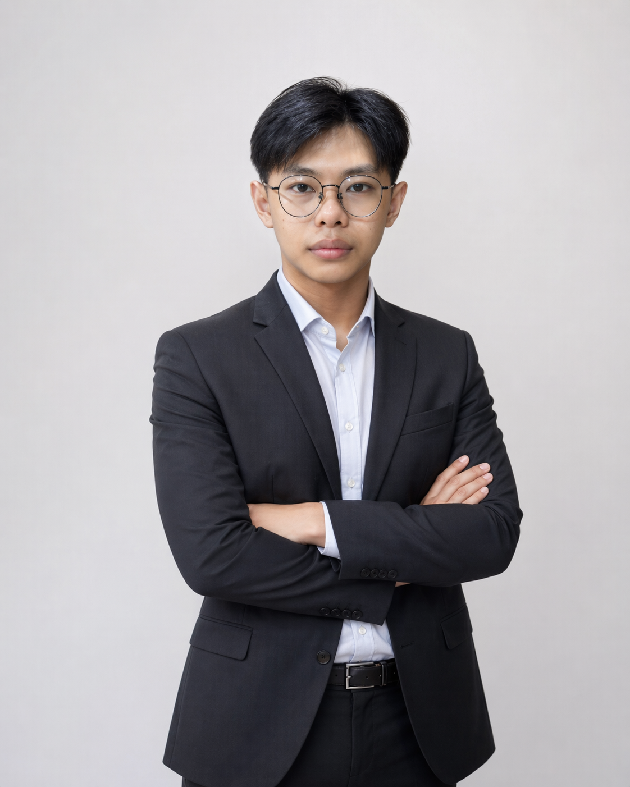

🚀 Siap Berkontribusi: Junior Web & Mobile DeveloperMahasiswa Akhir Teknik Perangkat Lunak Universitas Universal dengan IPK 3.96/4.00. Berpengalaman dalam ekosistem Laravel dan pengembangan aplikasi Android (Kotlin).
Saya adalah mahasiswa Teknik Perangkat Lunak yang memiliki gairah tinggi dalam memecahkan masalah komputasi lewat arsitektur kode yang bersih. Sepanjang perjalanan kuliah, saya berhasil mempertahankan gelar Mahasiswa Pencapai IPK Tertinggi Angkatan selama 3 periode berturut-turut.
Sorotan terbesar dalam perjalanan profesional saya sejauh ini adalah terpilih sebagai salah satu dari Top 50 Capstone Project Team di Bangkit Academy dari total lebih dari 600 tim di seluruh Indonesia, di mana saya berperan aktif sebagai pengembang aplikasi mobile.
3.96
IPK Kumulatif
Top 50
Capstone Bangkit Academy
BNSP
Certified Junior Coder
Aplikasi pemindai kandungan minuman berbasis gambar. Menggunakan kamera smartphone untuk mengidentifikasi nutrisi secara real-time.
Sistem penilaian kadar gula minuman harian personal pintar. Menyediakan kalkulator dinamis berbasis BMI, aktivitas, dan riwayat medis.
Kontribusi aktif dalam Divisi PTI & Humas. Terlibat langsung dalam kepanitiaan teknis Workshop UI/UX dan Web Development Kampus.
Badan Nasional Sertifikasi Profesi | Valid hingga Juni 2026
Oracle Academy | Diperoleh 2023
Journal of Digital Ecosystem for Natural Sustainability (JoDENS) | Juli 2025